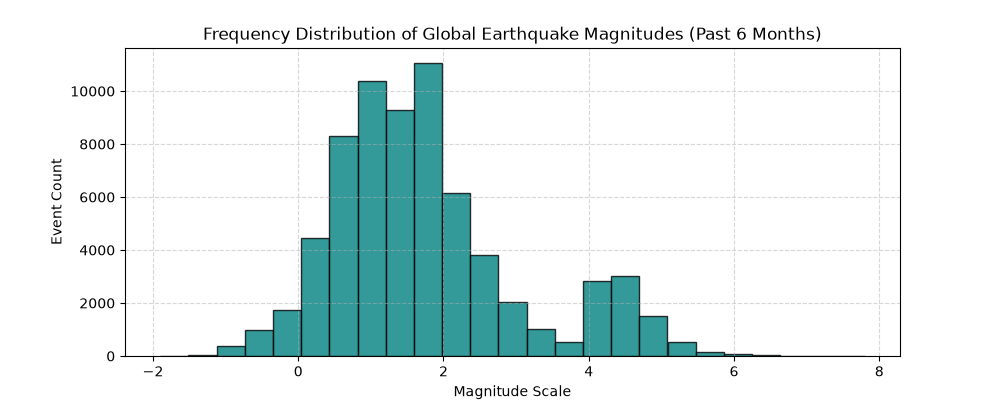
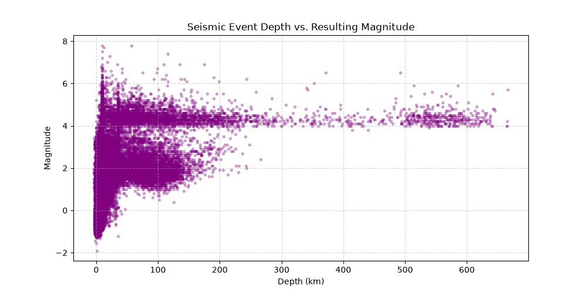

Depth/Magnitude Correlation: 0.36
All analytics cover the latest six calendar months (UTC).
| place_name | mag | depth | time_timestamp |
|---|---|---|---|
| 66 km NNW of Ende, Indonesia | 7.8 | 10.000 | 2026-08-14T21:58:21.561Z |
| 25 km SW of Kablalan, Philippines | 7.8 | 56.991 | 2026-06-07T23:37:41.970Z |
| 12 km WSW of Pitaloza Arriba, Panama | 7.7 | 12.647 | 2026-10-09T17:56:06.036Z |
| 20 km W of Catia La Mar, Venezuela | 7.5 | 10.000 | 2026-06-24T22:05:04.053Z |
| 4 km SSW of San José del Palmar, Colombia | 7.4 | 116.130 | 2026-08-10T12:34:28.828Z |
Regions are approximate latitude/longitude bounding boxes, not authoritative tectonic plate or fault boundaries. Events outside these boxes are reported as other or unclassified.
| seismic_zone | total_logged_events | average_magnitude | peak_magnitude |
|---|---|---|---|
| California Coast | 22124 | 1.07 | 5.6 |
| Alaska and Aleutian Region | 20104 | 1.53 | 6.5 |
| Other / Unclassified | 19531 | 2.34 | 7.7 |
| Hawaii Region | 2735 | 1.88 | 6.0 |
| Indonesia Region | 1752 | 4.55 | 7.8 |
| Puerto Rico Region | 1489 | 2.52 | 4.8 |
| Japan Region | 569 | 4.48 | 6.9 |

